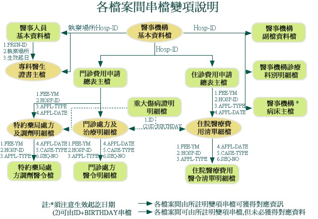
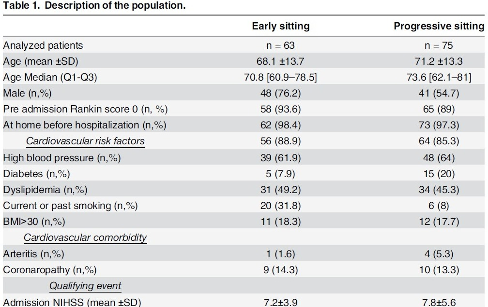
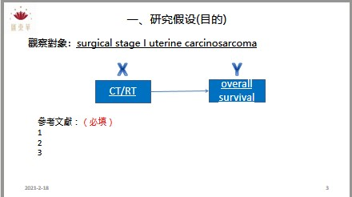

基礎閱讀技巧
X 軸、Y 軸、階梯曲線的正確解讀方式
 匯東華統計顧問有限公司
匯東華統計顧問有限公司
「風險人數表（Number at Risk）在哪裡？沒有這個表，我怎麼知道曲線後半段還剩幾個人？」
「這兩條曲線交叉了，你確定還能用 Hazard Ratio 來比較嗎？」
「5 年存活率 92%？可是圖上顯示這時候只剩 3 個人在追蹤，這個數字有意義嗎？」
「信賴區間呢？只給點估計，我怎麼評估這個結果的精確度？」
Kaplan-Meier 存活曲線為臨床研究中最常見的圖表之一。無論是藥物療效評估、預後因子分析，或是治療方案比較，KM 曲線都扮演著關鍵角色。
然而，許多研究者在「製作」曲線上花了很多功夫，卻忽略「閱讀」曲線的細節。一張看似簡單的 KM 曲線，其實藏著許多容易被忽略的資訊——設限標記代表什麼？曲線右端為什麼要謹慎解讀？曲線交叉時 Hazard Ratio 還可靠嗎？
這堂 2 小時的直播課程，將從「審稿人視角」出發，帶你深入理解 KM 曲線的每一個細節，讓你不只是「看懂」，更能「看透」。
當追蹤人數只剩個位數時，存活率的估計變得極不穩定。「10 年存活率 90%」可能只是基於 2 個人的數據，毫無統計意義。
當兩條曲線交叉，代表比例風險假設（PH Assumption）可能不成立。此時 Hazard Ratio 會嚴重誤導結論。
沒有「Number at Risk」表，讀者無法判斷曲線各時間點的樣本數。這是審稿人最常要求補充的項目之一。
曲線上的小垂直線（tick marks）代表設限觀察，不是事件發生。大量設限可能暗示研究設計問題或失訪偏誤。
X 軸、Y 軸、階梯曲線的正確解讀方式
如何從圖上讀取，以及何時無法估計
為什麼審稿人一定要看這張表
陰影區域與點估計的關係
比例風險假設違反時如何判讀
投稿前必須確認的 6 大項目
經常閱讀臨床研究論文，希望更深入理解 KM 曲線傳達的資訊，避免誤讀。
準備發表含有存活分析的研究，想確保自己的 KM 曲線格式與詮釋軍正確，並符合主流期刊的期待。
想系統性學習存活分析的基礎概念，從「看懂圖」開始入門。
本課程是存活分析系列的「入門磚」，適合尚未接觸過存活分析或想打好基礎的學員。
以下是與 Kaplan-Meier 曲線閱讀相關之優質資源：

服務價目表 (未含5%營業稅)
透過嚴謹的數據整理，提供有價值的資訊，形塑知識，提高決策品質。包括信達雅三執行原則。
信：確保資料品質可信賴
達：確保統計方法適切性
雅：確保圖文表格正規化
協助代執行統計分析與進一步加值服務。
在匯東華與夥伴的專業背景知識配合下，能有效地處理面對的問題。
統計分析成果
數據是礦藏，數據清洗是挖出鑽石的第一步，尤其是巨量知識。數據清洗或串接執行過程需要細心與專注，且有可能會消耗許多時間和精力，就由我們來替各位處理掉這個大麻煩。

全民健保研究資料庫、國外大型資料庫資料非常齊全，種類多，需要串接與清洗，進行正規化後才能更進一步進行資料探勘與統計分析。

Fig1.同一個Project資料散落在不同tables，無法使用

Fig2.整併與清理為可分析的table

Fig.3整理和分析後形成有意義的知識
概念與流程示意圖



為了讓匯東華的顧客與學員有更好的合作和消費體驗，故匯東華特別依據營業項目開發周邊產品，提供使用、購買。目前已有針對公共衛生師的題庫以及模擬試題，未來將針對醫學研究領域發展產品。